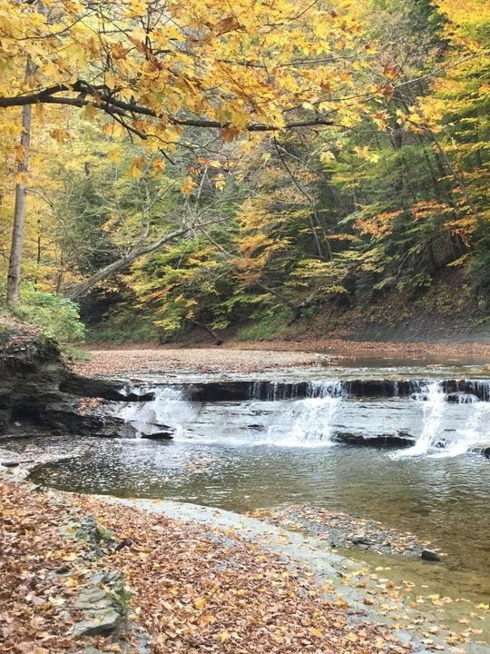
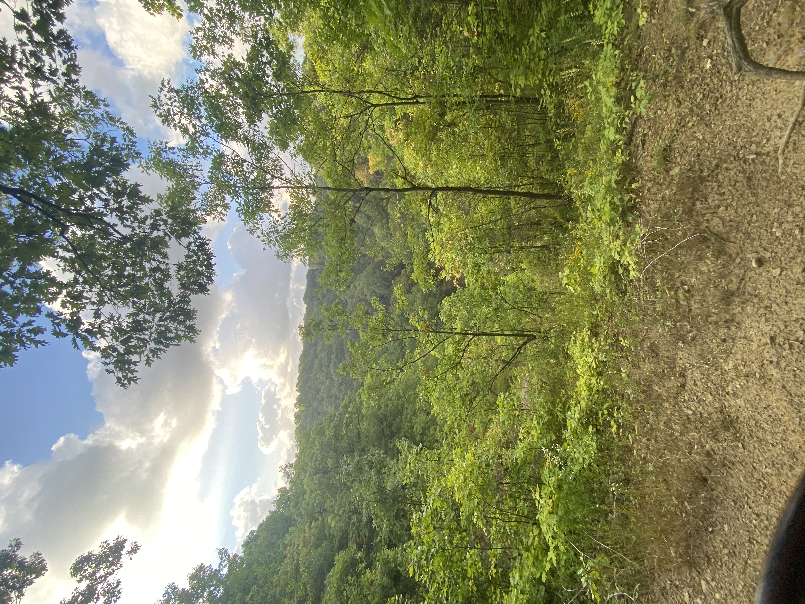

Tyler Cottrill ~ Web Portfolio
Home
Resume
Gallery
Reflection
Since this is my first semester, I don't have all that much to show for myself yet! For now, I'll link a few small projects. And some more photos, just for fun!
Projects:
Check out the
Wordpress
version of this website!!
Or the github
repository
for this one!
And my
Hypothes.is
annotations!

Small waterfall at the bottom of Wintergreen Gorge.
Little ghost man falls on their face.

Photograph from the edge of the Wintergreen Gorge.